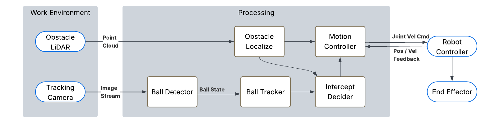
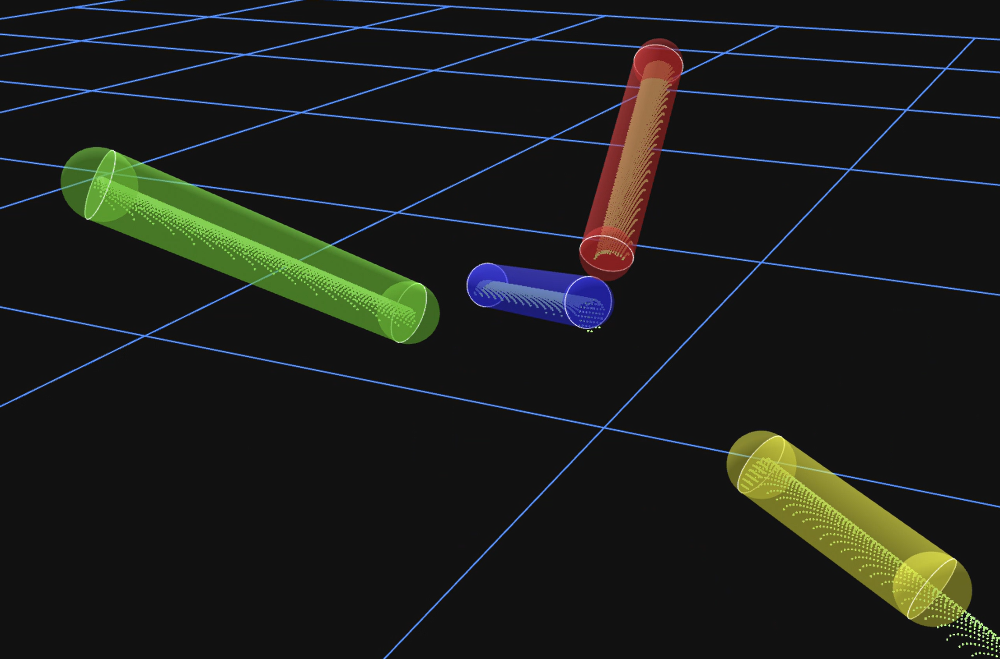
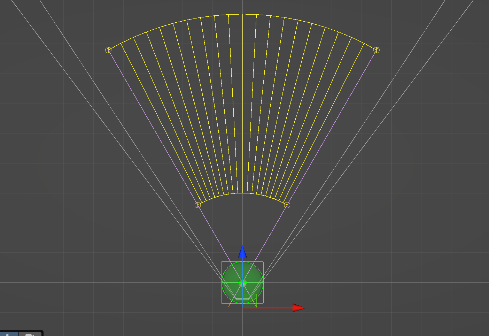
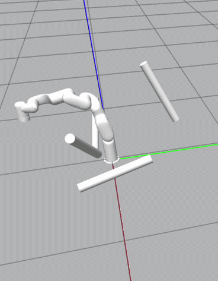
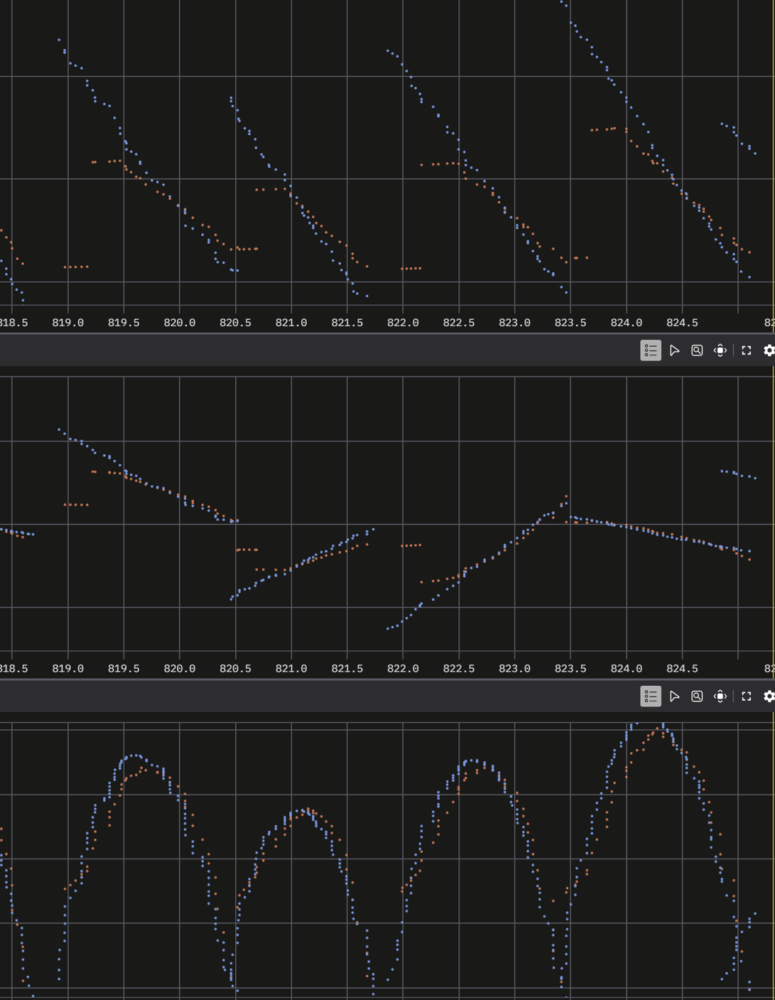

Overview
The senior capstone project is an autonomous ball-catching robotic arm system. The goal is for a robotic arm to detect a thrown ball in real time, predict its trajectory, plan a collision-free motion, and move to an intercept position to catch it — all within the fraction of a second the ball is in flight. The system integrates an xArm5 robot arm, a Time-of-Flight (ToF) depth camera for 3D perception, stereo camera tracking, and ROS 2 with MoveIt for real-time motion planning.


Perception & Ball Detection
The perception pipeline combines multiple sensing modalities to detect and track the ball in 3D space:
- Time-of-Flight depth camera: An overhead ToF depth camera provides a dense point cloud of the workspace for environment mapping, obstacle detection, and sensor-to-robot calibration.
- Tracking camera: A Kowa 3.5mm wide-angle lens on a FLIR machine vision camera provides the ball detection feed, with color-based segmentation producing real-time 3D position estimates.
- Ball state estimation: Detected ball positions are fed into a ballistic state estimator that fits measurements to a physics-based projectile model, predicting the full trajectory from just a few frames of flight data.


Trajectory Prediction & Workspace
The ball's trajectory must be predicted in real time to determine where and when the arm should intercept. The system computes the arm's reachable workspace envelope and only attempts catches for trajectories passing through it:


Motion Planning & Control
The arm uses a Model Predictive Controller (MPC) with a dynamic optimizer (QP solver) to generate real-time joint velocity commands. The controller incorporates the system model, cost function, and constraints to produce smooth, collision-free motions fast enough to beat the ball to the intercept point:


Testing & Results
The system progressed from simulation-only testing to closed-loop catch attempts with live ball throws. Real-time ball tracking accuracy and joint position tracking were validated using Foxglove:
